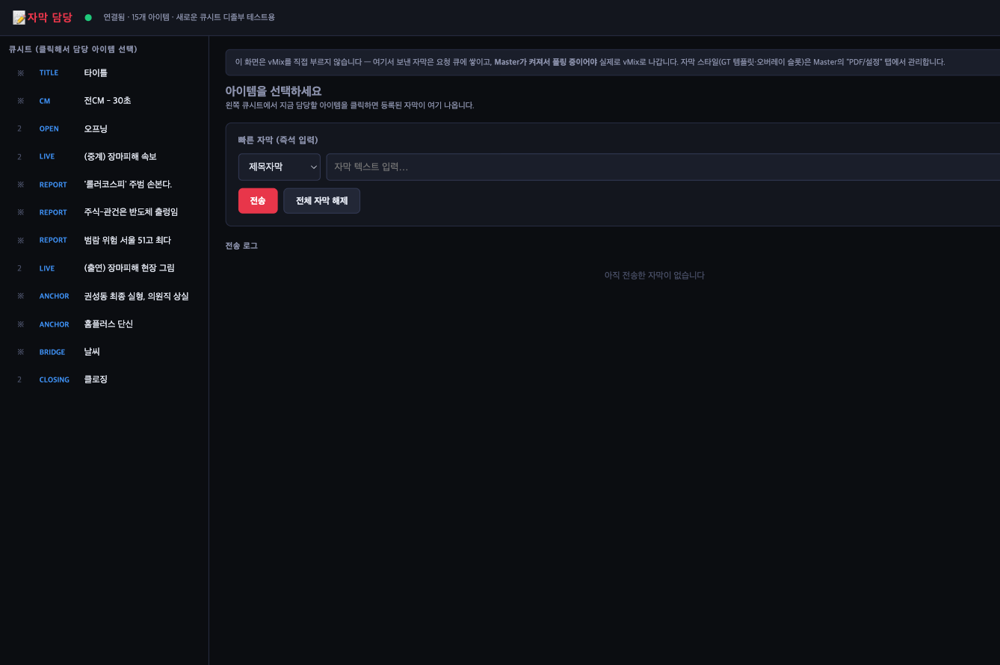
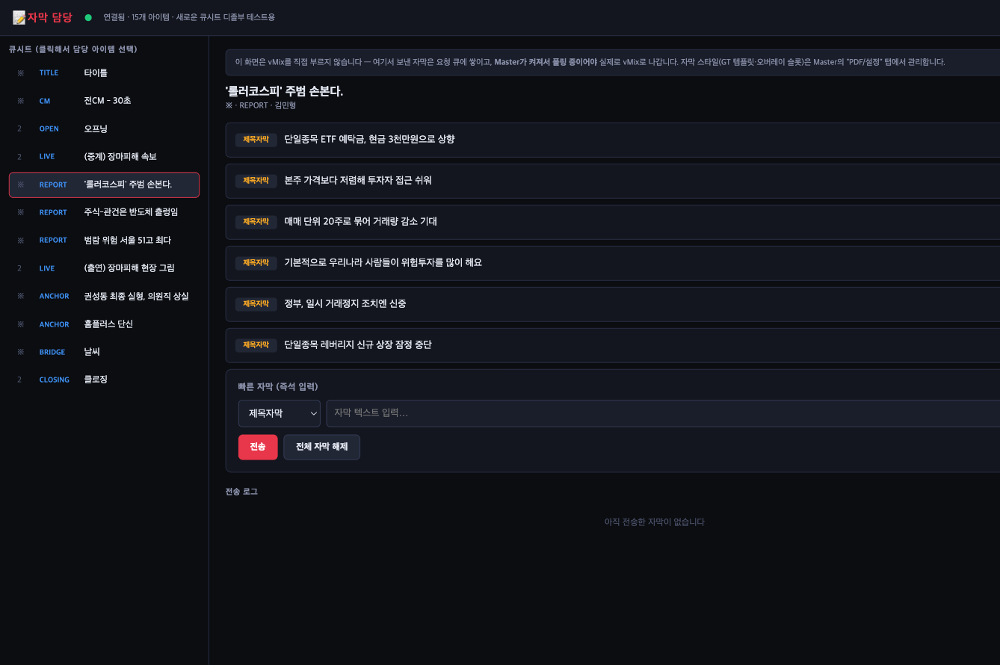

Master의 스위처를 직접 만지지 않고, 지금 큐시트의 어느 아이템에 어떤 자막이 준비돼 있는지만 보고 필요한 자막을 눌러 내보내는 전용 화면입니다. vMix를 직접 부르지 않고 Master에게 요청만 전달하는 구조라, 자막 담당자에게 방송 전체를 노출하지 않고 딱 필요한 조작만 줄 수 있습니다. 아래는 실제 운영 화면을 그대로 캡처한 이미지이며, 이 페이지 자체는 서버에 연결되어 있지 않아 클릭해도 반응하지 않습니다. 이미지를 클릭하면 크게 볼 수 있습니다.

Master에서 진행 중인 큐시트가 왼쪽 목록에 자동으로 동기화됩니다. 담당할 아이템을 클릭하면 그 아이템에 등록된 자막들이 오른쪽에 나타납니다.

기사에서 자동으로 뽑힌 제목자막 후보가 목록으로 뜨고, 원하는 걸 눌러 바로 내보냅니다. 미리 준비되지 않은 자막은 하단 "빠른 자막"에서 즉석으로 입력해 전송할 수 있습니다. 실제 vMix로 나가는 최종 실행은 Master가 맡고, 여기서는 요청만 전달합니다.